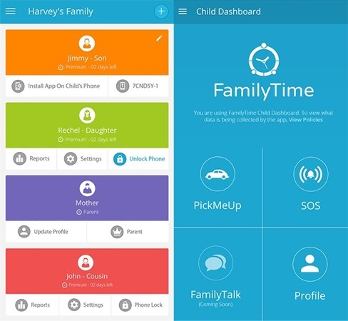
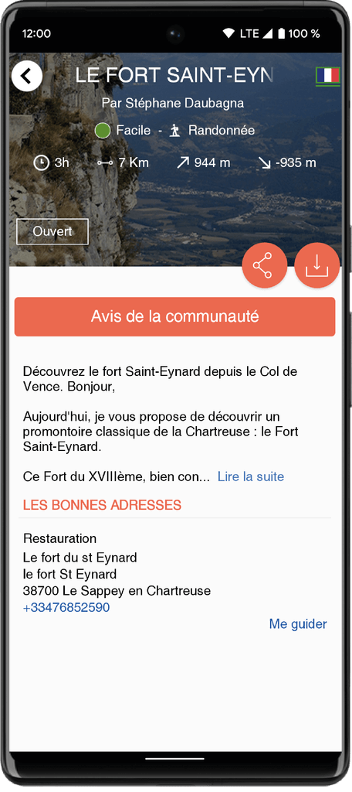

iOS
Swift · Objective-C · SwiftUI · UIKit · AVFoundation · UserNotifications · Accessibilité · URLSession · Xcode
Développeuse iOS · Swift · SwiftUI · UIKit
Développeuse iOS avec 5 ans d'expérience, spécialisée dans Swift, SwiftUI, UIKit et RxSwift. J'aime concevoir des applications mobiles fiables et offrir une expérience utilisateur moderne et intuitive.
Développeuse iOS
01 — À propos
Je suis Amal Zouhair, développeuse iOS avec 5 ans d'expérience dans la conception, le développement et la maintenance d'applications mobiles. J'interviens sur différentes étapes du cycle de développement, de la conception des fonctionnalités jusqu'aux tests et à la mise en production.
Je travaille principalement avec Swift, SwiftUI, UIKit et RxSwift, tout en utilisant des technologies et outils tels que Firebase, Fastlane, XCTest, Git, Jira, GraphQL, Alamofire et les outils de CI/CD.
02 — Compétences
Swift · Objective-C · SwiftUI · UIKit · AVFoundation · UserNotifications · Accessibilité · URLSession · Xcode
MVVM · Clean Architecture · Coordinator · Singleton · Delegate · Dependency Injection · Observer · RxSwift
Git · GitHub Desktop · Jira · Redmine · Fastlane · Firebase · SwiftLint · SPM · CocoaPods · Postman · Figma
XCTest · Tests unitaires · Tests UI · Tests d'intégration · Instruments · TestFlight · Firebase Crashlytics · Performance Monitoring
03 — Expérience
Février 2025 — Aujourd'hui
Swiftech · Application de taxi VLOX
Participation au développement de l'application mobile iOS de réservation de taxis.
Développement du module d'authentification et de gestion des comptes utilisateurs, conception du module de réservation avec estimation tarifaire et développement des fonctionnalités de géolocalisation en temps réel.
Mise en place du monitoring avec Firebase Analytics, Firebase Crashlytics et Firebase Performance Monitoring. Identification et correction des memory leaks avec Instruments.
Participation à l'amélioration de la chaîne CI/CD avec Fastlane, intégration des cartes interactives, navigation GPS et notifications push.
Janvier 2023 — Février 2025
Keyrus · Applications Orange Maxit & Carrefour
Participation au développement et à la maintenance de plusieurs applications mobiles iOS destinées à améliorer l'expérience utilisateur.
Conception et développement de nouvelles fonctionnalités en collaboration avec les équipes Produit, UX/UI et Backend. Intégration d'API REST et GraphQL, correction des anomalies et optimisation des performances.
Optimisation des tests automatisés unitaires, UI et d'intégration afin d'améliorer la stabilité du code et la couverture des tests.
Participation à la modernisation des applications iOS avec une migration progressive des écrans développés en UIKit vers SwiftUI.
Mise en place et suivi de la supervision applicative avec Firebase Analytics, Firebase Crashlytics et Performance Monitoring.
Juin 2022 — Décembre 2023
Smart Conseil · Application de contrôle parental
Conception et développement d'une application iOS de contrôle parental permettant aux parents de superviser et sécuriser l'activité numérique de leurs enfants.
Développement de fonctionnalités telles que la consultation de l'historique de navigation, le blocage des sites web malveillants, la gestion du temps d'écran et le suivi de l'utilisation des applications.
Développement d'interfaces utilisateur intuitives et ergonomiques en respectant les recommandations Apple Human Interface Guidelines.
Intégration de Firebase pour la gestion des données, l'analyse des événements utilisateurs, le suivi des performances et la remontée des crashs.
Développement et consommation d'API REST pour la synchronisation des données entre l'application mobile et les services backend.
Janvier 2022 — Mai 2022
IDIUM TOMORROW · Application de randonnée
Développement d'une application mobile dédiée à la découverte de destinations touristiques et à l'accompagnement lors de randonnées.
Ajout de fonctionnalités avancées comme le suivi GPS en temps réel, le téléchargement de cartes hors ligne et les recommandations d'itinéraires.
Développement de frameworks spécifiques pour la navigation en randonnée, notamment la gestion des points d'intérêt et des balises géographiques.
Revue et documentation du code, tests unitaires, tests d'interface et participation à la publication de l'application sur le Store.
04 — Projets

Application iOS permettant aux parents de superviser et sécuriser l'activité numérique de leurs enfants. Le projet comprend le suivi de l'utilisation des applications, la gestion du temps d'écran, l'historique de navigation et le blocage des sites malveillants.
Participation au développement et à la maintenance de plusieurs applications mobiles iOS. Développement de nouvelles fonctionnalités, intégration d'API REST et GraphQL, optimisation des performances et migration progressive de UIKit vers SwiftUI.
Application iOS de réservation de taxis avec authentification, réservation de courses, estimation tarifaire, géolocalisation en temps réel, suivi des chauffeurs, notifications push et navigation GPS.

Application mobile dédiée à la découverte de destinations touristiques et à l'accompagnement lors de randonnées, avec suivi GPS en temps réel, cartes hors ligne, recommandations d'itinéraires et gestion des points d'intérêt.
05 — Contact
Je serais ravie d'échanger avec vous.